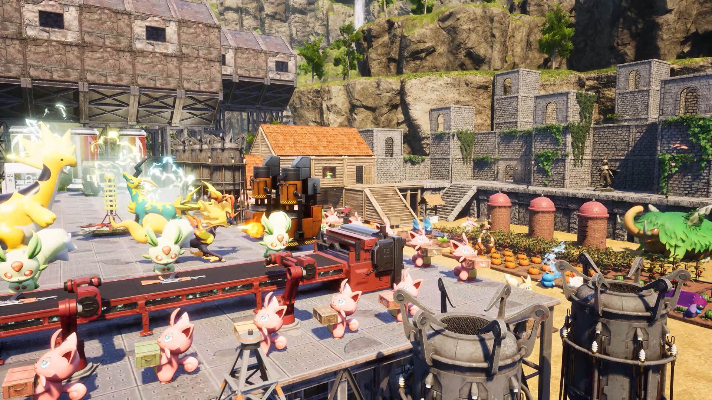

PALWORLD
Batty MacCommunity server

Loading the islands…
Alphas are assumed alive until a confirmed kill starts the respawn timer.
Exact coordinates and player positions stay on batty-mac. The public report receives normalized boss status only.
Every tile describes the setting in plain language, with artwork that reflects the rule it changes.
These accomplishments are inferred from the server’s live guild and workforce snapshot. Boss kills and old events are not exposed by Palworld’s public data yet.
No partner-skill data available.